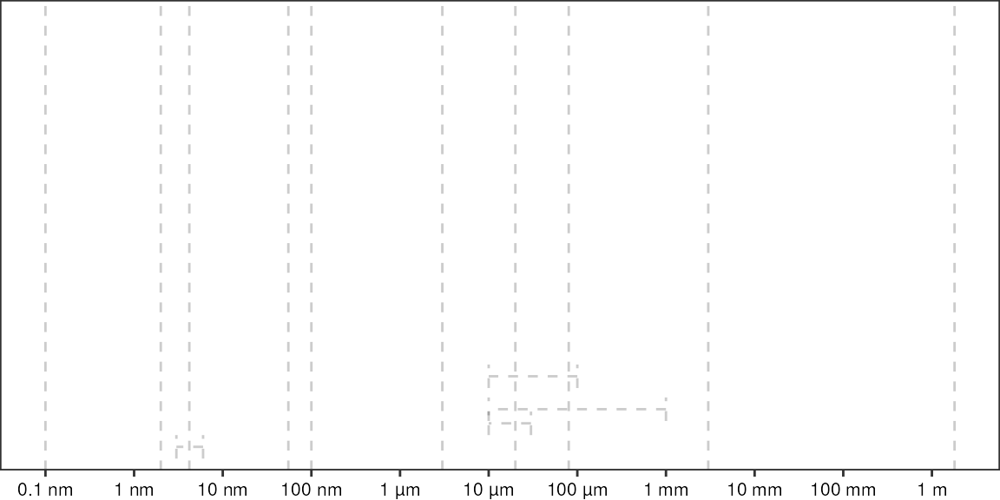

Thesis Plots
thesis_plots.RmdGlobal settings:
- theme
- figure width (= latex textwidth)
textwidth <- 62 Background
Relative sizes of things on a logarithmic scale:
# define locations of vertical dashed lines
vLines <- c("atom" = 0.1e-9, "protein" = 4.2e-9, "phage" = 55e-9, "virus" = 100e-9, "bacteria" = 3e-6, "cell" = 10e-6, "human" = 1.8)
vLines
#> atom protein phage virus bacteria cell human
#> 1.0e-10 4.2e-09 5.5e-08 1.0e-07 3.0e-06 1.0e-05 1.8e+00
# x coordinates for axis labels
xBreaks <- 10^seq(-10, 1)
names(xBreaks) <- c("0.1 nm", "1 nm", "10 nm", "100 nm", "1 µm", "10 µm", "100 µm", "1 mm", "10 mm", "100 mm", "1 m")
ggplot() +
geom_vline(xintercept = vLines, alpha = 0.2) +
geom_rect(aes(xmin = 10e-6, xmax = 30e-6, ymin = 0, ymax = Inf), alpha = 0.2) +
# geom_tile(aes(x = 20e-6, y = 0, width = 20e-6, height = Inf), color = "red") +
scale_x_log10(breaks = xBreaks) +
scale_y_continuous(breaks = c(), limits = c(0,1), expand = expansion(add = 0)) +
theme_pretty_thesis()
Save as PDF: